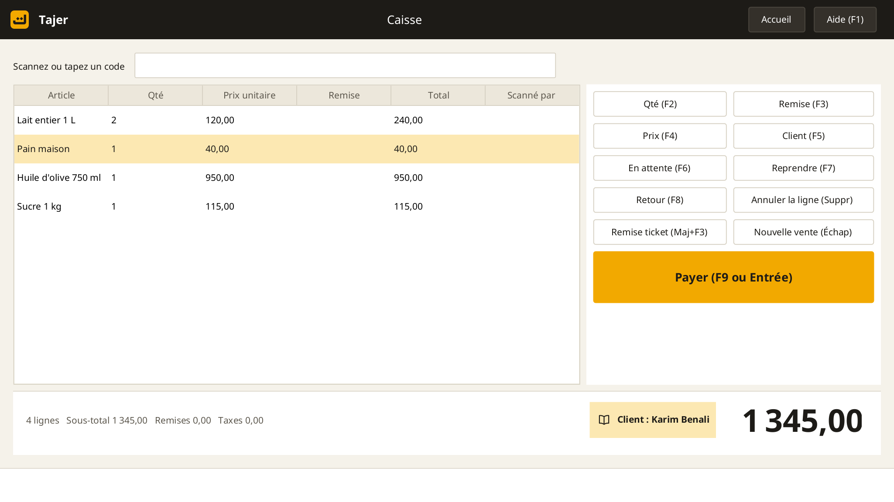
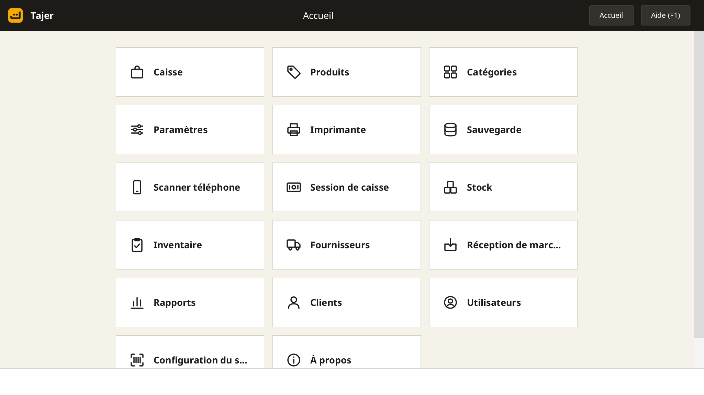
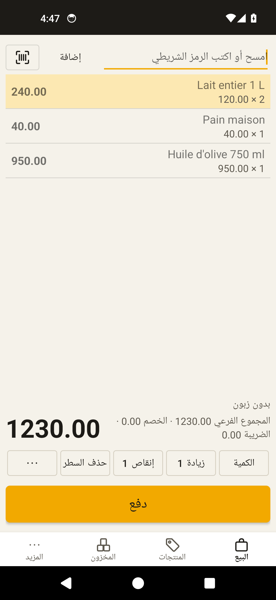

Caisse, stock et crédit clients pour tout commerce, sans Internet.
Vente au code-barres, carnet de crédit, stock avec dates de péremption, achats, rapports et sauvegardes. Sur ordinateur et sur téléphone, en arabe, français, anglais, espagnol, italien et allemand.
Version 1.0.5. Faites toujours une sauvegarde de vos données.
Télécharger v1.0.5
f7099c29af278879 3ae1664aca939ef0 b55cca0bb9704e00 Captures



Ce qu'il fait
Rapide en caisse
Lecteur code-barres ou caméra du téléphone, touches rapides, tout au clavier.
Carnet de crédit
Solde par client, plafond, relevé imprimé, reçu à chaque paiement. Sans intérêts.
Stock et péremption
Lots datés, vente des produits périmés bloquée, inventaire, achats fournisseurs.
Sans Internet
Vos données restent dans votre magasin. Ni cloud ni pistage. Plusieurs caisses en réseau local.
Le téléphone comme lecteur
Reliez le téléphone au PC par le Wi-Fi du magasin, ou utilisez-le comme caisse.
Documents conformes
NIF, RC, NIS et AI sur ticket et facture, clôture journalière, rapports PDF.
Configuration
- PC Windows 7 ou plus récent, 2 Go de RAM, processeur double cœur.
- Imprimante ticket ESC/POS 58 ou 80 mm (optionnel).
- Lecteur code-barres USB ou caméra du téléphone (optionnel).
- Téléphone Android 5 ou plus (optionnel).
Installation
- Lancez l'installateur et gardez le dossier C:\RetailPOS (nom en lettres latines).
- Acceptez la règle du pare-feu pour relier le téléphone.
- Au premier démarrage : langue, magasin avec NIF et RC, mot de passe des sauvegardes, administrateur.
Licences et source
Tajer est basé sur Floreant POS (licence MRPL 1.2). Le code des parties sous licence est disponible sur demande selon l'offre de source.